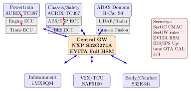
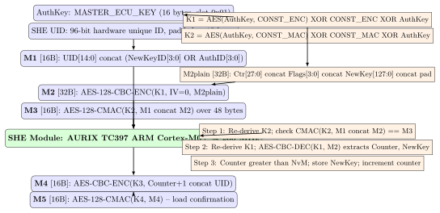

Chapter 15: Automotive Hardware Security¶
Note: Automotive cybersecurity became a regulatory requirement in 2022 when UN ECE WP.29 Regulation 155 took effect. Over 100 million vehicles now contain embedded HSMs implementing SHE or EVITA specifications.
15.1 Automotive Threat Landscape¶
Modern vehicles contain 50–150 ECUs and expose attack surfaces across multiple wireless interfaces. The 2015 Jeep Cherokee exploit by Charlie Miller and Chris Valasek exploited a Sprint cellular IP port 6667 QNX D-Bus vulnerability, pivoting to rewrite DPIM CAN firmware – enabling remote brake, throttle, and steering control at highway speed with no physical access. The attack caused a 1.4 million vehicle recall, the first ever for a cybersecurity issue.
15.1.1 Remote Attack Surface¶
-
OBD-II port (SAE J1979): 16-pin DLC connector. CAN pins 6/14. Full UDS (ISO 14229) access. Service 0x27 Security Access, 0x34/0x36 firmware download. No authentication. Aftermarket 4G/BLE dongles create persistent remote access.
-
V2X (DSRC/C-V2X): DSRC IEEE 802.11p at 5.9 GHz. C-V2X 3GPP PC5 sidelink. BSM (PSID 0x20) broadcast at 10 Hz. Pre-2019 deployments lacked certificate validation.
-
Cellular TCU: 4G LTE/5G NR modems in TCUs. Qualcomm MDM9615 CVEs (2014–2016). Cellular often connected to infotainment CAN.
-
Bluetooth: A2DP, HFP, BLE GATT. BlueBorne 2017 (CVE-2017-0781): RCE without pairing.
-
WiFi 802.11ac: WPA2-TKIP downgrade, PMKID, KRACK (CVE-2017-13077). Tesla Model 3 WiFi exploit at Pwn2Own 2019.
-
Key fob/PASE: LF 125 kHz + UHF 315/433/868 MHz. Relay attacks extend to 100 m. Keeloq broken (Courtois 2008).
-
CCC Digital Key/UWB: NFC ISO 14443 + UWB IEEE 802.15.4z for centimeter ranging. Apple CarKey, Android NFC key.
Warning: The OBD-II port provides completely unauthenticated access to all vehicle CAN networks. A rogue 4G-enabled dongle provides persistent remote access to safety systems with no way for the driver to detect the compromise.
15.2 Automotive E/E Architecture¶
Three E/E architecture generations define automotive security:
-
Distributed ECU (pre-2015): 80–150 dedicated ECUs on separate CAN segments. Gateway ECU (NEC V850, Renesas RH850) routes between segments with no security filtering. Wiring harness 40–60 kg.
-
Domain-based (2015–2025): Domain Controller ECUs. Domains: Powertrain, Chassis/Safety, ADAS, Infotainment, Body, V2X. Central Gateway NXP S32G274A provides CAN-to-Ethernet bridging with firewall rules. Wiring 30–40 kg.
-
Zone-based (2025+): Zone ECUs by physical region. 1000BASE-T1 backbone. Software-Defined Vehicle. VW MEB/SSP, Tesla S/X (2021+), GM Ultium. Wiring target under 20 kg.
15.2.1 AUTOSAR Classic and Adaptive¶
-
Classic CP: OSEK/VDX RTOS. BSW: COM stack (PDUR, CANIF, SecOC), Memory (NvM, FEE), Crypto (CSM, CRYIF, CRY/SHE driver). ASIL-D brakes, steering, airbag.
-
Adaptive AP: POSIX Linux/QNX. ara::com (SOME/IP), ara::crypto API. ADAS, OTA, V2X stack. Supports OCI containers.

15.3 CAN Bus Security¶
CAN (ISO 11898, Bosch 1986) has no built-in security: no source authentication (any node can forge any arbitration ID), broadcast topology (all nodes receive all frames), plaintext payloads (no encryption), no replay protection, and bus-off DoS via error frame injection.
| Attack | Mechanism | Target | Countermeasure |
|---|---|---|---|
| Frame injection | Forge arb ID | Any ECU | SecOC AES-CMAC |
| UDS replay | Record 0x27 seed/key | Security access | Freshness counter |
| ISO-TP FC inject | Forge flow ctrl | Multi-frame sessions | Session state machine |
| Bus-off DoS | Error frame flood | Safety ECUs | Error recovery |
| Firmware reflash | UDS 0x34/0x36/0x37 | All ECUs | ECDSA signed firmware |
| DTC erasure | UDS 0x14 | All ECUs | HSM audit log |
| CAN fuzzing | Random injection | All ECUs | CAN firewall rules |
15.4 CAN SecOC – Secure Onboard Communication¶
AUTOSAR SecOC (SWS_SecuredOnboardCommunication, R20-11) adds AES-128-CMAC authentication to CAN, LIN, FlexRay, and Automotive Ethernet PDUs without protocol changes.
15.4.1 SecOC MAC Operation¶
-
MAC input: DataID[15:0] (16-bit PDU identifier) \(\|\) AuthenticPDU \(\|\) FreshnessValue[63:0].
-
MAC compute: AES-128-CMAC(SecOC_KEY, MAC_input). SecOC_KEY in SHE KEY_n slot.
-
Truncate: First N bits of 128-bit CMAC (N = 24–64 bits per AUTOSAR config).
-
Assemble: Secured PDU = AuthPDU \(\|\) TruncFreshness[3:0] \(\|\) TruncMAC.
-
Receive: Expand truncated freshness using stored counter + accept window, verify MAC.
| Tier | CAL | MAC bits | Fresh bits | Accept Window |
|---|---|---|---|---|
| Safety-critical (ABS, EPS) | CAL 3–4 | 48–64 | 8 | 4 |
| Chassis (TPMS, suspension) | CAL 2–3 | 32 | 8 | 8 |
| Powertrain (engine, trans) | CAL 2 | 24 | 4 | 16 |
| Body (lights, HVAC, doors) | CAL 1 | 24 | 4 | 16 |
15.5 SHE – Secure Hardware Extension¶
HIS SHE Specification v1.1 (2009) developed by BMW, Bosch, Continental, Volkswagen. AES-128-only embedded HSM targeting cost-sensitive ECUs where full EVITA HSM is not economically justified.
| Slot ID | Name | Purpose | Flags |
|---|---|---|---|
| 0x00 | SECRET_KEY | Internal KDF, never exposed | Always locked |
| 0x01 | MASTER_ECU_KEY | Authorize key updates | WRITE_PROTECT |
| 0x02 | BOOT_MAC_KEY | Verify secure boot CMAC | BOOT_PROTECT |
| 0x03 | BOOT_MAC | Stored boot firmware MAC | BOOT_PROTECT |
| 0x04 | KEY_1 | SecOC / user AES-128 | Configurable |
| 0x05–0x0E | KEY_2 to KEY_11 | User AES-128 keys | Configurable |
| 0x0F | KEY_12 | Debug/calibration | DEBUGGER_PROTECT |
| 0x10–0x1F | (SHE+ extensions) | AES-256, ECC, RSA slots | Configurable |
| Command | Operation | Key Slot |
|---|---|---|
| CMD_LOAD_KEY (0x01) | Provision via M1/M2/M3 | MASTER_ECU_KEY |
| CMD_LOAD_PLAIN_KEY (0x02) | Load volatile RAM key | None |
| CMD_EXPORT_RAM_KEY (0x03) | Export encrypted RAM key | MASTER_ECU_KEY |
| CMD_ENC_ECB (0x04) | AES-128-ECB encrypt/decrypt | KEY_1..KEY_12 |
| CMD_ENC_CBC (0x05) | AES-128-CBC encrypt/decrypt | KEY_1..KEY_12 |
| CMD_GENERATE_MAC (0x06) | AES-128-CMAC compute | KEY_1..KEY_12 |
| CMD_VERIFY_MAC (0x07) | AES-128-CMAC verify | KEY_1..KEY_12 |
| CMD_INIT_RNG (0x0A) | Initialize PRNG | SECRET_KEY |
| CMD_EXTEND_SEED (0x0B) | Mix entropy into PRNG | SECRET_KEY |
| CMD_RND (0x0C) | Generate 128 random bits | PRNG state |
| CMD_GET_STATUS (0x0F) | Read 8-bit status register | None |
| CMD_GET_ID (0x10) | Read 96-bit UID + CMAC | MASTER_ECU_KEY |
| CMD_BOOT_FAILURE (0x11) | Signal boot verify failure | BOOT_MAC_KEY |
| CMD_BOOT_OK (0x12) | Signal successful boot verify | BOOT_MAC_KEY |
| CMD_CANCEL (0x13) | Cancel blocking operation | None |
15.5.1 CMD_LOAD_KEY Protocol: M1/M2/M3¶

15.6 EVITA HSM Profiles¶
EVITA (EU FP7 2008–2011, EUR 8.1M, participants: Bosch, BMW, ESCRYPT, NXP) defined three hardware HSM profiles adopted by AUTOSAR and ISO/SAE 21434.
| Feature | Full | Medium | Light |
|---|---|---|---|
| Target ECU | Gateway, ADAS | Domain controller | Sensor/actuator |
| AES-128/256 HW | Yes | Yes | Yes |
| RSA-2048 HW | Yes | Yes | Software only |
| ECC P-256 HW | Yes | Yes | Software only |
| SHA-256 HW | Yes | Yes | Software only |
| TRNG quality | AIS-31 PTG.2 | AIS-31 PTG.2 | PRNG only |
| Secure NVM | HW encrypted | Hardware | OTP limited |
| Physical tamper | Active shielding | Logical only | None |
| Secure timer | HW monotonic | Hardware | None |
| Secure boot | ECDSA-P256 | ECDSA-P256 | AES-CMAC |
| SHE compatible | Optional SHE+ | Yes SHE+ | Yes SHE v1.1 |
| Example chip | AURIX TC397 | NXP S32K344 | RH850/P1x-C |
| Process node | 28nm FDSOI | 40nm LP | 40nm LP |
| HSM area | 4 mm2 | 1 mm2 | 0.3 mm2 |
15.7 AURIX TC3xx HSM – Infineon TriCore¶
-
Main CPU: 6x TriCore TC1.8E at 300 MHz (3 lockstep pairs, ASIL-D), 16 MB flash, 6.9 MB SRAM.
-
HSM core: ARM Cortex-M0+ at 200 MHz. Hardware-isolated from TriCore via MPU (8 regions). Inaccessible at any TriCore privilege level.
-
HSM Flash: 256 KB at 0xAF500000. No read/write/execute from TriCore.
-
HSM SRAM: 32 KB with hardware access control.
-
AES engine: AES-128/256 (ECB, CBC, CTR, GCM, CMAC). Throughput 1.28 Gbps AES-128-ECB at 200 MHz.
-
Asymmetric: RSA-2048 (sign 30 ms, verify 1 ms), RSA-4096 (sign 200 ms), ECC P-256 (scalar mul 2 ms), ECC P-384 (scalar mul 5 ms).
-
Hash: SHA-256 at 400 MB/s, SHA-384/SHA-512 at 280 MB/s.
-
TRNG: Ring-oscillator entropy, AIS-31 PTG.2, conditioned via AES-256-CTR-DRBG.
-
SHE+: HIS SHE v1.1 plus AES-256, ECC, RSA, up to 20 key slots.
-
Secure Boot: ECDSA-P256 verification of TriCore firmware before CPU release.
-
IPC: 32 mailbox registers: HSM_HSTx (host to HSM) + HSM_HTSx (HSM to host).
-
Lifecycle: DEVELOPMENT (writable) to PRODUCTION (eFUSE; Flash locked, debug off).
-
ASIC: 28nm FDSOI, STMicro Crolles fab. BGA-416, 27x27 mm. AEC-Q100 Grade 1.
| Device | Vendor | HSM Core | Crypto | Spec | Target |
|---|---|---|---|---|---|
| AURIX TC397 | Infineon | ARM M0+ 200 MHz | AES/ECC/RSA/SHA | SHE+ | ADAS, chassis |
| AURIX TC387 | Infineon | ARM M0+ 200 MHz | AES/ECC/RSA | SHE+ | Powertrain |
| AURIX TC375 | Infineon | ARM M0+ 100 MHz | AES/SHA | SHE | Body, safety |
| S32K344 | NXP | ARM M0+ 100 MHz | AES/RSA/ECC | SHE | Body, chassis |
| S32G274A | NXP | ARM M0+ | AES/RSA/ECC | EVITA Full | Gateway |
| RH850/U2A | Renesas | ARM M0+ | AES/ECC/RSA | SHE+ | ADAS, gateway |
| RH850/P1x-C | Renesas | Dedicated CISC | AES-128 only | SHE v1.1 | Body, PT |
| SPC58xB | STMicro | ARM M0 HSM | AES/RSA/ECC | SHE | Powertrain |
| SPC58xH | STMicro | ARM M0 HSM | AES/RSA/ECC | EVITA Med | ADAS |
| TMS570LC4357 | Texas Instr | Dual-CPU lockstep | AES-128 HW | SafeTI | Safety |
| SAME54+ATECC608B | Microchip | ARM M4F + SE | ECC/SHA/AES | No SHE | Telematics |
| Vector CANoe HSM | Vector | PC emulation | All emulated | SHE emulated | Dev/test |
15.8 V2X Security – IEEE 1609.2 and SCMS¶
15.8.1 IEEE 1609.2 Certificate Format¶
IEEE 1609.2-2022 SignedData: hashId (SHA-256 or SHA-384), tbsData, signer (certificate or HashedId8), signature (EcdsaP256Signature: r = compressed point 33B, s = 32B). Certificate size: approximately 145–200 bytes COER encoded.
15.8.2 SCMS Architecture¶
-
Root CA: ECDSA-521, offline, 20+ year validity. Thales Luna HSM 7 air-gapped facility. Operated by USDOT-designated CAMP.
-
Enrollment CA (ECA): 5-year Enrollment Certificates (EC) issued at manufacturing. EC proves vehicle legitimacy to PCA.
-
Pseudonym CA (PCA): 1-week Pseudonym Certificates (PC) via butterfly key expansion. Blind issuance: PCA cannot link EC to PC.
-
LA1 + LA2: Independent linkage seed components. LV = PRF(s1, s2, cert_id) embedded in each PC. Both LAs required to de-anonymize.
-
Misbehavior Authority (MA): Investigates reports, requests seeds from LA1+LA2 jointly.
| Platform | Vendor | Radio | Crypto | Target |
|---|---|---|---|---|
| SAF5100 RoadLink | NXP | DSRC 802.11p + C-V2X | ECDSA-256 HSM | OEM TCU |
| CRATON2 | Autotalks | Dual DSRC+C-V2X | ECDSA-256, AES | OEM+Aftermarket |
| Cohda MK5 OBU | Cohda | 802.11p, GPS, CAN | IEEE 1609.2 HSM | RSU + OBU |
| Cohda MK6 OBU | Cohda | C-V2X PC5, ETH | IEEE 1609.2 HSM | OEM OBU |
| SXGA3040 | Savari | DSRC 5.9 GHz | IEEE 1609.2 | Road-side unit |
15.9 Uptane – OTA Security¶
Uptane (Linux Foundation Automotive, IEEE/ISTO, production: BMW, GM, Rivian):
-
Director Repository: Signs Targets binding image hashes to ECU serial numbers. Director alone cannot install arbitrary images.
-
Image Repository: Offline-signed (air-gapped HSM) Targets with image hashes. Timestamp: 24-hour expiry. Prevents freeze attacks.
-
Primary ECU: Fetches + verifies both repositories. Distributes to Secondaries.
-
Secondary ECUs: Independent crypto verification. Hardware rollback counter (AURIX SMU, eMMC RPMB).
-
ECU Manifest: Signed firmware inventory report sent to Director periodically.
15.10 ISO/SAE 21434 and UN ECE WP.29 Regulation 155¶
| Regulation/Standard | Type | Key Requirements | Effective |
|---|---|---|---|
| ISO/SAE 21434:2021 | Engineering standard | CSMS, TARA, CAL 1–4 | Aug 2021 |
| UN ECE R155 | Type approval | CSMS, incident response | EU Jul 2022 |
| UN ECE R156 | Type approval | SUMS, OTA validation | EU Jul 2022 |
| AUTOSAR SecOC | Tech specification | CAN PDU authentication | Continuous |
| IEEE 1609.2-2022 | IEEE standard | V2X certificate security | 2022 |
| Uptane standard | IEEE/ISTO | OTA image security | 2019+ |
Tip: CAL (Cybersecurity Assurance Level) 1–4 in ISO/SAE 21434 mirrors ASIL A–D in ISO 26262. CAL 4 requires penetration testing by independent third party, formal threat analysis, and code review. A brake or steering ECU receiving V2X inputs typically requires CAL 3 or CAL 4 based on TARA outcome.
15.11 FPGA Automotive HSM Resource Utilization¶
| Function | FPGA Device | LUTs | FFs | BRAMs | MHz |
|---|---|---|---|---|---|
| AES-128-CMAC engine | PolarFire MPF025T | 1,850 | 1,200 | 2 | 125 |
| SHE controller full | PolarFire MPF025T | 3,200 | 2,400 | 4 | 100 |
| ECDSA P-256 verify | PolarFire MPF025T | 8,500 | 6,000 | 8 | 80 |
| SHE+ (AES+ECC+RSA) | PolarFire MPF095T | 22,000 | 15,000 | 24 | 90 |
| AES-128-CBC | Zynq-7020 Auto | 1,200 | 900 | 2 | 200 |
| SecOC engine | Zynq-7020 Auto | 2,800 | 2,100 | 4 | 150 |
| V2X ECDSA P-256 sign | Zynq UltraScale+ EV | 9,200 | 6,800 | 12 | 150 |
Tip: Microsemi PolarFire (MPF025T–MPF300T) is AEC-Q100 Grade 1 automotive-qualified with non-volatile flash configuration cells eliminating the bitstream readback vulnerability of SRAM FPGAs. The TRNG meets AIS-31 PTG.3. PolarFire is the preferred FPGA for automotive HSM prototyping.
15.12 C Code: SHE CMD_LOAD_KEY¶
/* SHE CMD_LOAD_KEY HIS SHE v1.1 */
#include <stdint.h>
15.13 C Code: SHE CMD_LOAD_KEY¶
/* SHE CMD_LOAD_KEY HIS SHE v1.1 */
#include <stdint.h>
15.14 Solved Problems¶
Solved Problem: SHE CMD_LOAD_KEY M1/M2/M3 Calculation
Provision KEY_1 (slot 0x04) into AURIX TC397. MASTER_ECU_KEY = 0x000102030405060708090A0B0C0D0E0F, UID (15 bytes) = 0x01234567890ABCDEF012340000000000, new KEY_1 = 0x404142434445464748494A4B4C4D4E4F, counter = 1, flags = 0x04. Derive K1, construct M1, describe M2 structure, specify M3 input.
Solution: Step 1: KDF Constants (HIS SHE v1.1, Table 1)
CONST_ENC = 01 01 53 48 45 00 80 00 00 00 00 00 00 00 00 B0
CONST_MAC = 01 02 53 48 45 00 80 00 00 00 00 00 00 00 00 B0
Step 2: Derive K1 – Miyaguchi-Preneel Compression
\(K_1 = \text{AES}(\text{AuthKey}, \text{CONST\_ENC}) \oplus \text{CONST\_ENC} \oplus \text{AuthKey}\)
Step 3: Build M1 (16 bytes)
Byte 15 = \((0x04 \ll 4) \mid 0x01 =\) 0x41. M1 = 01 23 45 67 89 0A BC DE F0 12 34 00 00 00 00 41
Step 4: M2 Plaintext (32 bytes)
Word 0 = \((\text{counter} \ll 4) \mid \text{flags} = (1 \ll 4) \mid 4 = \texttt{0x14}\). Bytes 0–3: 00 00 00 14. Bytes 4–19: new key. Bytes 20–31: zero.
Step 5: Encrypt M2 = AES-128-CBC(K1, IV=0, M2plain)
Block 1 input = M2plain[0..15] XOR 0x00..00. Block 2 input = M2plain[16..31] XOR Block1 ciphertext (CBC chaining).
Step 6: M3 = AES-128-CMAC(K2, M1 \(\|\) M2)
48 bytes (3 AES blocks). CMAC output: 16-byte authentication tag proving possession of AuthKey.
Step 7: SHE Verification
SHE re-derives K2, verifies M3 CMAC, re-derives K1, decrypts M2, checks counter (1 > 0), stores KEY_1, returns M4+M5 confirmation.
Solved Problem: CAN SecOC Freshness Counter Design for EPS ECU
Design SecOC freshness for EPS ECU: 100 Hz CAN, 8-byte frame, 6-byte authentic PDU, 2-byte SecOC trailer. Requirements: no cross-ignition replay, tolerate 5 missed messages.
Solution: Step 1: Trailer Space Analysis
Available: 8 - 6 = 2 bytes = 16 bits for SecOC trailer (TruncFreshness + TruncMAC).
Step 2: Full Freshness Counter Structure (64-bit, NvM-persisted)
-
Bits 63..48: Trip counter (16 bits). Incremented at ignition ON. NvM-persisted.
-
Bits 47..40: ECU reset counter (8 bits). Incremented at ECU reset within trip.
-
Bits 39..32: Reserved (8 bits, zero).
-
Bits 31..0: Message counter (32 bits, 100 Hz). Capacity: \(2^{32}/100 \approx 497\) days.
Step 3: Truncation for 16-bit Trailer
TF (Truncated Freshness): 4 bits = bits 3..0 of message counter. TM (Truncated MAC): 12 bits = bits 127..116 of CMAC. Byte 6: TF[3:0] | TM[11:8]. Byte 7: TM[7:0].
Step 4: Accept Window
Window = 8: accepts [N, N+7] mod 16. Tolerates 7 missed messages \(\geq 5\). Satisfied.
Step 5: Cross-Ignition Replay Prevention
NvM persist at ignition OFF. Ignition ON: increment trip bits 63..48, zero bits 31..0, write NvM. Captured frames from trip T have trip counter T. In trip T+1 MAC input includes trip counter T+1, so old MAC fails verification.
Step 6: Security Analysis
12-bit MAC: brute force probability 1/4096 per attempt. At 100 Hz: 100/4096 = 2.4% per second. For CAL-3 (safety-critical EPS): upgrade to CAN FD 12-byte, use 24-bit MAC (3 bytes). Brute force: 100/16777216 = 0.0006% per second. Meets CAL-3 requirement.
Solved Problem: V2X Pseudonym Certificate Pool Sizing
Fleet of 500,000 vehicles: urban 2 hr/day (10 rotations/hr), highway 2 hr/day (1 rotation/hr), 5-day weekday + weekend. Cert size 200 bytes. Calculate certs/vehicle/week, PCA signing rate, storage/vehicle.
Solution: Step 1: Rotations per Vehicle per Week
Urban weekday: \(10 \times 2 \times 5 = 100\). Highway weekday: \(1 \times 2 \times 5 = 10\). Weekend urban (2 days, 2 hr each): \(10 \times 2 \times 2 = 40\). Weekend highway: \(1 \times 2 \times 2 = 4\). Total: \(100 + 10 + 40 + 4 = 154\). With 20% margin: \(\lceil 154 \times 1.2 \rceil = 185\) certs/vehicle/week.
Step 2: PCA Backend Signing Rate
Fleet weekly demand: \(500{,}000 \times 185 = 92.5\text{M}\) certs/week. Average rate: \(92.5\text{M} / 604{,}800 \approx 153\) ECDSA-P256 signs/second. Peak factor 5x (Monday morning): \(153 \times 5 = 765\) signs/second. Thales Luna HSM 7 ECDSA-P256: 10,000 ops/sec. Required: 1 HSM. Deploy 3 for HA.
Step 3: Storage per Vehicle
Certificates: \(185 \times 200 = 37{,}000\) bytes = 36 KB. Private keys (32B each): \(185 \times 32 = 5{,}920\) bytes = 5.8 KB. Metadata: \(185 \times 20 = 3{,}700\) bytes = 3.6 KB. Total: 46.6 KB. Private keys in NXP SE050 (50 KB NVM). Certs + metadata in eMMC RPMB partition.
Solved Problem: TARA Analysis: Rogue OBD-II Dongle Attack
Perform ISO/SAE 21434 Clause 15 TARA for: rogue OBD-II dongle (ESP32+SIM800L+TJA1050, $15 BOM) shipped to fleet manager. Provides bidirectional 4G CAN bus access to attacker C2. Identify assets, STRIDE threats, attack path, damage, risk value, countermeasures.
Solution: Step 1: Asset Identification
Safety: ABS, ESP, EPS, engine management, airbag. Privacy: GPS trip history, driver behavior, VIN. Financial: odometer, insurance telemetry. Operational: fleet routing, maintenance data.
Step 2: STRIDE Threats
-
S: Inject arb ID 0x1A0 (wheel speed cluster), data=0x00x8. ABS deactivates at 100 km/h.
-
T: UDS 0x34/0x36/0x37 ECU reflash if 0x27 seed/key is XOR-based.
-
R: UDS 0x14 ClearDTC erases all DTCs and event data records.
-
I: UDS 0x22 reads VIN (0xF190), odometer (0xF4B1), GPS, key handles.
-
D: Error frame flood drives ABS ECU TEC above 255. Bus-Off state.
-
E: UDS 0x27 brute-force XOR seed/key. Engineering session unlock.
Step 3: Attack Path
C2 \(\to\) 4G \(\to\) ESP32 \(\to\) TJA1050 \(\to\) OBD-II pins 6/14 \(\to\) ID=0x1A0, data=0x00x8 at 100 Hz. ABS sees zero wheel speed. Driver brakes at 100 km/h. Wheels lock. Vehicle crashes.
Step 4: Damage
Severity S3 (ISO/SAE 21434): severe injuries or fatalities. Controllability C3: not controllable by average driver.
Step 5: Feasibility
Elapsed time: \(< 1\) day. Expertise: Advanced. Knowledge: Restricted-to-Public (opendbc). Equipment: ?. Attack potential: HIGH (4/5 EVITA scale).
Step 6: Risk Value
ISO/SAE 21434 5x5 matrix: Impact = 5 (S3), Feasibility = 4 (HIGH). Risk Level = 5 (Unacceptable). CAL requirement = CAL 4.
Step 7: Countermeasures and Residual Risk
C1: CAN SecOC CMAC on all safety PDUs (0x1A0, 0x200). Unsigned frames rejected. Stops injection. C2: OBD-II CAN firewall (NXP S32G): whitelist diagnostic PIDs only. C3: UDS 0x27 via ECDSA HSM challenge-response. Cannot brute-force. C4: CAN IDPS anomaly detection. C5: Physical OBD-II port lock (NFC release). Residual risk after C1+C2+C3: Risk Level 2 (Acceptable).
15.15 Recent Developments (2024–2026)¶
The period 2023–2026 marks the transition from voluntary automotive cybersecurity measures to mandatory regulatory enforcement, with new V2X hardware generations, the Tesla HW4 security architecture, advanced HSM silicon, hardware-enforced OTA security, and AUTOSAR SecOC hardware requirements standardised for zone-based E/E architectures.
15.15.1 ISO/SAE 21434:2021 and UNECE WP.29 R155 Enforcement (2024)¶
UNECE Regulation 155 (R155) required all new vehicle type approvals in the European Union, Japan, and South Korea to demonstrate a certified Cybersecurity Management System (CSMS) from July 2022. The critical 2024 enforcement milestone extended this requirement to all newly manufactured vehicles (not just new type approvals):
| Date | Requirement | Hardware impact |
|---|---|---|
| Jul 2022 | New type approvals: CSMS mandatory (EU/JP/KR) | HSM mandatory for CAL 3+ ECUs |
| Jul 2024 | All new vehicles (EU/JP/KR): CSMS mandatory | SHE+ or EVITA in all safety ECUs |
| 2025+ | China GB/T 44464 equivalent (draft) | Domestic HSM requirements expected |
| 2026 | R156 (OTA): signed update mandatory globally | RPMB / hardware rollback counter |
Note: ISO/SAE 21434:2021 does not mandate specific hardware; it requires that the TARA outcome drives hardware selection. In practice, CAL 3 and CAL 4 items (safety-critical brake, steering, engine management ECUs receiving external inputs) universally require hardware HSMs (SHE+ or EVITA Medium/Full) to achieve the cryptographic protection strength required.
15.15.2 V2X PKI: C-V2X (5G NR-V2X) vs. DSRC Hardware Comparison¶
The V2X hardware ecosystem bifurcated in 2023–2024 between legacy DSRC (IEEE 802.11p, OBD-deployed) and C-V2X (3GPP Rel-16 NR-V2X PC5) in new OEM deployments:
| Feature | DSRC (802.11p) | C-V2X (NR-V2X PC5) |
|---|---|---|
| Radio | 5.9 GHz, 10 MHz channels | 5.9 GHz PC5 Rel-16 |
| Hardware | NXP SAF5100, Cohda MK5 | Qualcomm FSM10055, NXP SAF5400 |
| HSM | Integrated ECDSA-P256 | Integrated ECDSA-P256 + SEV |
| Pseudonym certs | IEEE 1609.2 (COER) | IEEE 1609.2 (same format) |
| Latency | \(<\)2 ms (no network dep.) | 1–4 ms (Uu-free PC5) |
| Certificate issuance latency | SCMS offline batch | SCMS online (\(<\)100 ms) |
| CNSA 2.0 readiness | Requires upgrade to P-384 | P-384 in Rel-18 draft |
The NXP SAF5400 (C-V2X, 2023) integrates the IEEE 1609.2 certificate management and signing engine into a single SoC with dedicated HSM (Arm Cortex-M7 at 400 MHz), supporting concurrent ECDSA-P256 signing at 5,000 ops/s for dense-traffic 10 Hz BSM broadcast scenarios (\(\approx 500\) simultaneous peer vehicles per intersection).
15.15.3 Tesla Full Self-Driving Computer HW4 (2023) Security Architecture¶
Tesla Hardware 4 (HW4, introduced in Model S/3/X/Y from late 2022, widely deployed 2023) represents the current state-of-the-art in OEM FSD security:
-
SoC: Samsung 7 nm dual-chip configuration, each with two FSD neural network accelerators (ASIC NPUs), ARM Cortex-A72 application cluster, and an isolated security domain.
-
Secure Boot: Four-stage measured boot (BootROM \(\to\) BL1 \(\to\) TF-A \(\to\) FSD OS) with per-stage ECDSA-P384 signature verification. Boot measurements are extended into an internal PCR-equivalent register and signed with the device’s unique key before any network connection is permitted.
-
Camera pipeline isolation: Camera ISP data paths are routed through SMMU-protected DMA channels; the FSD NPU can only DMA from designated camera buffer regions, preventing cross-sensor data leakage.
-
OTA attestation: Each OTA delta package is verified by an ECDSA-P384 Tesla production key. HW4 adds a monotonic hardware counter (in SEC NVM) that prevents downgrade to a previous signed version even if the attacker presents a valid old signature.
-
Tamper detection: HW4 implements a silicon-level physical tamper detector (differential voltage monitor on SEC domain VDD) that triggers erasure of the device attestation key if VDD deviation exceeds \(\pm\)3% for more than 10 \(\mu\)s.
15.15.4 Automotive HSM: Infineon SHE+ and NXP SE050 Automotive Grade¶
Two HSM products targeting emerging automotive requirements (post-quantum readiness, EVITA Full performance, and ISO 26262 ASIL-B/D qualification):
Infineon SHE+ v1.2 (2024 firmware, AURIX TC3xx): Adds optional ML-DSA-44 (FIPS 204) verification to the existing ECDSA-P384 secure boot chain via an HSM firmware extension, enabling hybrid classical + post-quantum firmware signature verification for vehicles with a 2035 end-of-life target aligned with CNSA 2.0.
NXP SE050 Automotive (AEC-Q100 Grade 2, 2023): Extends the commercial SE050 secure element with:
-
Operating range: \(-40\) to \(+105\) \(^\circ\)C (Grade 2)
-
AEC-Q100 qualification: 1000 h HTOL, 85\(^\circ\)C/85% RH THB
-
I2C interface: 1 MHz Fast-Mode+, fault-tolerant framing for CAN gateway integration
-
Key capacity: 12 ECDSA-P256 key slots, 4 ECC-P384, 3 AES-256
-
Certifications: CC EAL6+ (same as commercial SE050), ISO 26262 ASIL-B for safety-relevant key operations (secure boot signing key management)
15.15.5 OTA Hardware Security: Signed Rollback Protection¶
UNECE R156 (Software Update Management System, SUMS) requires hardware-enforced rollback prevention as a mandatory feature of OTA update systems from 2024. Hardware rollback counter implementations in production:
| Mechanism | Hardware | Security property |
|---|---|---|
| eMMC RPMB (Replay Protected Memory Block) | eMMC 5.1 (Micron, Kioxia) | 32-bit counter signed by device-unique HMAC key |
| AURIX TC3xx NvM SMU | Infineon TriCore SMU | 32-bit monotonic NvM counter, HSM-protected |
| eFUSE version counter | Multiple MCUs | Blow-once per update: irreversible version lock |
| Uptane hardware counter | AURIX + eMMC RPMB | Dual-source mutual verification |
Warning: eFUSE-based version counters are irreversible – each software update permanently blows one fuse bit. For a vehicle with 150 ECUs and 25-year lifetime, a 32-bit eFUSE counter supports at most 32 updates per ECU. Uptane with eMMC RPMB provides equivalent security with unlimited update cycles and is preferred for gateway and infotainment ECUs.
15.15.6 AUTOSAR SecOC Hardware Requirements for Zone E/E Architectures¶
The AUTOSAR R22-11 SecOC specification (Secure Onboard Communication) has been updated for zone-based E/E architectures (2024 baseline):
-
Ethernet SecOC: MACsec (IEEE 802.1AE) is now the mandatory link-layer security for 1000BASE-T1 backbone links in zone-based architectures, replacing per-PDU CMAC for backbone traffic. Zone ECUs must include a MACsec-capable Ethernet PHY (NXP TJA1120, 2023).
-
CAN FD SecOC latency: For safety-critical PDUs at 10 ms cycle time, the SecOC CMAC computation must complete within 2 ms. This requires hardware AES-CMAC acceleration; software-only implementations on Cortex-M4 at 120 MHz cannot meet this requirement for 64-bit MAC lengths.
-
Key freshness via HSM: The freshness value provider (FvP) must be backed by a hardware monotonic counter in the HSM, not a software counter, to prevent FvP manipulation by a compromised host CPU.
-
Hardware crypto requirement: AUTOSAR R22-11 formally mandates that AES-CMAC for CAL 3 and CAL 4 PDUs must be computed in an HSM subsystem isolated from the main CPU, citing the SHE+ or EVITA Light specification as the minimum acceptable implementation.
15.16 Exercises¶
Exercises
-
Describe the three fundamental security weaknesses of CAN (ISO 11898). For each, provide a specific attack with the exact arbitration ID, injected payload, affected ECU, and resulting vehicle behavior.
-
SHE mandates AES-128 only. Grover algorithm reduces post-quantum security to 64-bit effective. Assess whether AES-128 SecOC keys are adequate for vehicles in service until 2045 and describe the SHE+ migration path.
-
Design a complete SecOC configuration table for 20 CAN PDUs across three security tiers (safety 5 ms, chassis 20 ms, body 100 ms). Specify CAN FD payload, authentic PDU size, truncated freshness bits, truncated MAC bits, accept window, and brute-force attack time for each tier.
-
A factory provisioned 50,000 AURIX TC397 ECUs with the same MASTER_ECU_KEY value. An attacker extracts the key via fault injection. Assess the blast radius and design a remote re-keying procedure using only CMD_LOAD_KEY.
-
Reconstruct the 2015 Jeep Cherokee attack chain: (a) Sprint cellular IP port 6667, (b) QNX D-Bus IPC escalation, (c) Harman HU firmware update, (d) DPIM CAN firmware rewrite. Identify CVSS v3.1 score for each step.
-
IEEE 1609.2 uses ECDSA P-256 (64-byte sig). A post-quantum extension proposes ML-DSA-44 (2420-byte sig). Calculate maximum V2X vehicles per km2 broadcasting BSMs at 10 Hz on DSRC 10 MHz channel at 6 Mbps, 50% efficiency. Compare P-256 vs. ML-DSA-44.
-
Explain the SCMS butterfly key expansion scheme. Show how a single enrollment certificate request produces 20 unique pseudonym keypairs without the PCA learning the vehicle identity.
-
Uptane requires Director + Image repository dual signatures. Construct a specific attack where Director is fully compromised but Image repository (offline keys) prevents arbitrary firmware installation. Show the verification failure sequence.
-
Perform TARA for V2X BSM spoofing: attacker broadcasts 50 phantom BSMs claiming braking at 0 km/h on a highway on-ramp. Identify damage scenarios for ADAS cooperative collision avoidance. Propose countermeasures at PHY, MAC, and ADAS application layers.
-
The AURIX TC397 HSM IPC uses 32 mailbox registers. Identify the TOCTOU vulnerability where TriCore modifies command buffer between HSM reading header and parameters. Describe the parameter snapshotting mitigation.
-
UN ECE Regulation 155 requires OEMs to report cybersecurity incidents. An OEM discovers a remotely exploitable buffer overflow in 800,000 production vehicles. Write the complete incident response plan from T+0 to T+72h including regulatory notification and patch deployment strategy.
-
Implement in Python using the
cryptographylibrary a SHE CMD_VERIFY_MAC function: given 16-byte key, message (hex string), reference MAC (hex string), and truncation N bytes (1–16), compute AES-128-CMAC and return VERIFICATION_PASSED or VERIFICATION_FAILED. Validate against NIST SP 800-38B test vector 1: key=2B7E151628AED2A6ABF7158809CF4F3C, empty message, expected MAC=BB1D6929E95937287FA37D129B756746.